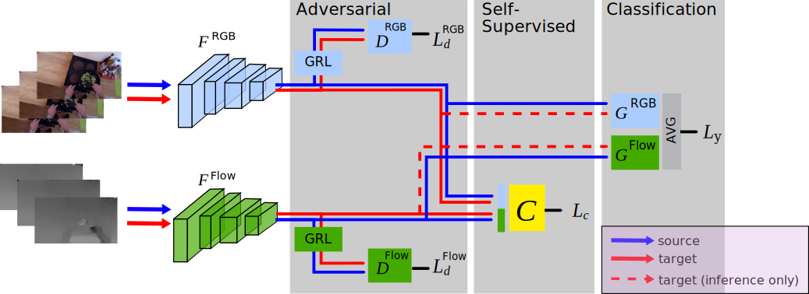

Multi-modal Domain Adaptation for Fine-grained Action Recognition
CVPR 2020

Proposed architecture: feature extractors FRGB and FFlow are shared for both target and source domains. Domain Discriminators, DRGB and DFlow, are applied to each modality. Self-supervised correspondence of modalities, C, is trained from both source and unlabelled target data. Classifiers, GRGB and GFlow are trained using source domain examples only from the average pooled classification scores of each modality. During inference, multi modal target data is classified.
Authors
Jonathan Munro - University of Bristol, Visual Information Laboratory
Dima Damen - University of Bristol, Visual Information Laboratory
Fine-grained action recognition datasets exhibit environmental bias, where multiple video sequences are captured from a limited number of environments. Training a model in one environment and deploying in another results in a drop in performance due to an unavoidable domain shift. Unsupervised Domain Adaptation (UDA) approaches have frequently utilised adversarial training between the source and target domains. However, these approaches have not explored the multi-modal nature of video within each domain. In this work we exploit the correspondence of modalities as a self-supervised alignment approach for UDA in addition to adversarial alignment. We test our approach on three kitchens from our large-scale dataset, EPIC-Kitchens, using two modalities commonly employed for action recognition: RGB and Optical Flow. We show that multi-modal self-supervision alone improves the performance over source-only training by 2.4 on average. We then combine adversarial training with multi-modal self-supervision, showing that our approach outperforms other UDA methods by 3%.
Video
Download
Paper to be uploaded
Dataset labels to be uploaded
Bibtex
@InProceedings{munro20multi,
author = "Munro, Jonathan and Damen, Dima",
title = "{M}ulti-modal {D}omain {A}daptation for {F}ine-grained {A}ction {R}ecognition",
booktitle = "Computer Vision and Pattern Recognition (CVPR)",
year = "2020"}
Acknowledgement
Research supported by: EPSRC LOCATE (EP/N033779/1) and EPSRC Doctoral Training Programme at the University of Bristol.